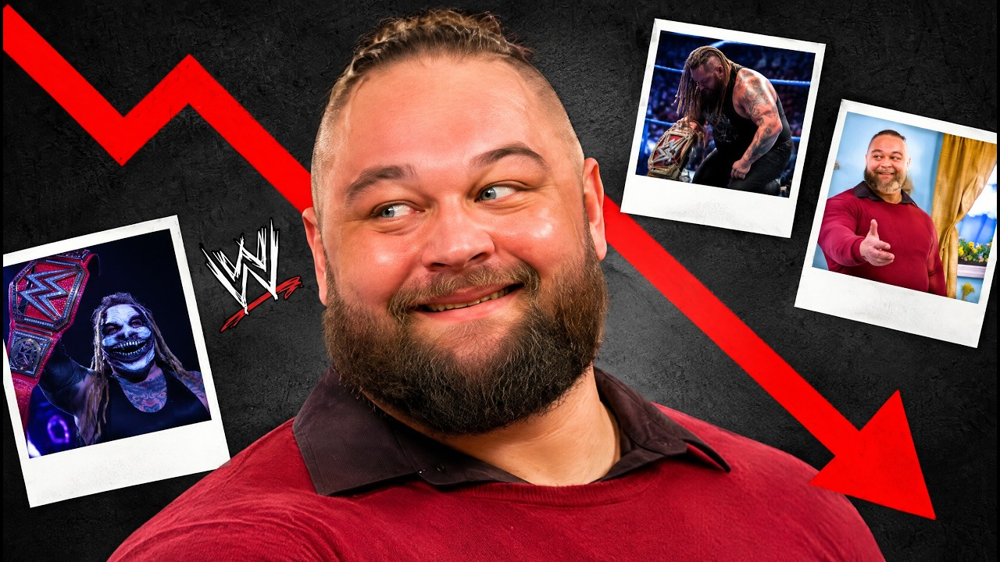

Come la WWE ha fallito con Bray Wyatt: i 6 errori che hanno frenato The Fiend
Bray Wyatt aveva creato da solo uno dei personaggi più forti della storia WWE. E ogni volta che arrivava in cima, qualcuno lo faceva cadere. I 6 errori, dalla sconfitta con Cena a WrestleMania 30 a Goldberg.
La WWE aveva tra le mani una miniera d'oro. E l'ha buttata.
Bray Wyatt si era inventato da solo uno dei personaggi più forti della storia del wrestling. E ogni volta che arrivava in cima, qualcuno gli metteva sotto i piedi una buccia di banana. Nel video qui sopra racconto i sei errori della WWE con lui. Qui li trovi tutti, con date e retroscena.
Chi era Bray Wyatt
Il suo vero nome era Windham Rotunda. Terza generazione di wrestler: il papà Mike Rotunda, il nonno Blackjack Mulligan, gli zii Barry e Kendall Windham. Il wrestling ce l'aveva nel sangue.
All'inizio però in WWE era Husky Harris, uno dei tanti del Nexus. Nessuno se lo ricordava.
E qui c'è il primo dettaglio. Windham non è diventato speciale perché gli hanno regalato qualcosa. Se l'è inventato da solo. Nel 2012, in FCW, nasce Bray Wyatt: un predicatore del sud con la camicia hawaiana, il cappello, la sedia a dondolo. Nel wrestling dove tutti urlano, lui sussurrava. E funzionava.
L'8 luglio 2013 a Raw debutta la Wyatt Family con Luke Harper ed Erick Rowan, e distrugge Kane.
Errore 1 e 2: due WrestleMania, due sconfitte
A WrestleMania 30 Bray affronta John Cena. La storia era bellissima: dimostrare che il supereroe era un'illusione. Risultato? Vince Cena. Se costruisci uno che entra nella testa degli avversari e poi perde alla prima vera occasione, il messaggio è: era solo scena.
L'anno dopo, a WrestleMania 31, ci riprovano contro The Undertaker. Il "nuovo volto della paura" contro il Deadman. Passaggio di consegne perfetto, no? No. Vince Taker. E secondo PWInsider Bray quel giorno si era fatto male alla caviglia, ma ha lottato lo stesso.
Errore 3: campione per 49 giorni
Elimination Chamber, 12 febbraio 2017: Bray vince il WWE Championship. Primo titolo mondiale. Il rivale a WrestleMania 33 è Randy Orton, che si era finto suo "fratello" per distruggere la Wyatt Family da dentro.
Poi il match. Proiezioni di vermi e scarafaggi sul ring. Sulla carta geniale, dal vivo nessuno capiva niente. RKO dal nulla, Bray perde il titolo dopo 49 giorni.
Errore 4: Hell in a Cell 2019
Poi la rinascita. La Firefly Fun House, il programma per bambini con un mostro nascosto dentro: The Fiend. Il debutto a SummerSlam 2019 contro Finn Bálor è uno spettacolo. Il pubblico lo vuole tifare.
Doveva solo proteggerlo. Spoiler: non l'ha fatto.
Hell in a Cell, 6 ottobre 2019, Sacramento: The Fiend contro Seth Rollins per lo Universal Championship. Ring tinto di rosso, non si vedeva niente. E il finale: l'arbitro ferma il match. Una no contest dentro la Cell, dove le regole non esistono. Il pubblico ha urlato "restart the match", Dave Meltzer gli ha dato meno due stelle e i lettori dell'Observer l'hanno votato peggior match dell'anno.
Il finale era un'idea di Vince McMahon, e Rollins a Broken Skull Sessions ha raccontato che era pronto a strangolarlo.
Errore 5: Goldberg in tre minuti
Il 31 ottobre 2019 a Crown Jewel The Fiend batte Rollins e diventa campione. È il picco.
Poi Super ShowDown, 27 febbraio 2020. Torna Goldberg, 53 anni. Quattro Spear, una Jackhammer, titolo perso in circa tre minuti. Il mostro che si rialzava sempre, battuto in meno del suo ingresso.
E il bello? Goldberg a CBS Sports ha raccontato di essere volato in Arabia sapendo che avrebbe perso, e che il finale è stato cambiato. "E di sicuro non sono stato io".
Errore 6: un titolo da trampolino e WrestleMania 37
Attenzione, la WWE ha fatto anche cose geniali. Il Firefly Fun House Match contro Cena a WrestleMania 36 è uno dei segmenti più creativi di sempre.
Ma guardate dopo. Agosto 2020: The Fiend vince di nuovo il titolo a SummerSlam contro Braun Strowman. Una settimana dopo, a Payback, lo perde in un Triple Threat: torna Roman Reigns e schiena Strowman, senza nemmeno battere The Fiend. Il titolo serviva a lanciare un altro.
E a WrestleMania 37 contro Orton spunta Alexa Bliss da una scatola, The Fiend si distrae, RKO. Secondo Fightful il finale fu cambiato poco prima del match da Vince McMahon e Bruce Prichard. Un'altra WrestleMania, un'altra sconfitta.
Il licenziamento, il ritorno, l'addio
Il 31 luglio 2021 la WWE lo licenzia. Ufficialmente tagli al budget. Secondo Fightful in azienda quasi nessuno ci credeva, ma non c'è mai stata una conferma. Con Triple H alla guida creativa arrivano i teaser del White Rabbit e l'8 ottobre 2022 a Extreme Rules Bray torna. A gennaio 2023 batte LA Knight nel Pitch Black Match alla Royal Rumble.
Il 24 agosto 2023 Triple H annuncia che Windham Rotunda è morto. Aveva 36 anni. Undertaker lo ha detto meglio di tutti: non aveva bisogno che qualcuno gli passasse la torcia. Se l'era creata da solo.
Il mio verdetto
La WWE non ha fallito con Bray perché non credeva in lui. Lo ha messo a WrestleMania contro Cena, Undertaker e Orton, gli ha dato titoli mondiali.
Il problema è un altro. Un personaggio così vive di credibilità. Un mostro che perde a WrestleMania, a WrestleMania e ancora a WrestleMania non è più un mostro. È uno che fa scena. L'idea era giusta. È stata la gestione a essere sbagliata.
E ora tocca a voi. Qual è stato l'errore più grande? WrestleMania 30, Hell in a Cell o Goldberg? Scrivetelo nei commenti su YouTube, li leggo tutti, e iscrivetevi al canale Tony Wrestling.
Le altre storie sono nella rubrica Come la WWE ha fallito con…: leggi anche Cesaro, Dolph Ziggler e Ryback. E se ti piacciono i personaggi horror, c'è la mia classifica delle superstar più spaventose della WWE.
Fonti:
- Video: Come la WWE ha fallito con Bray Wyatt (Tony Wrestling)
- Bray Wyatt su Wikipedia (carriera, titoli, licenziamento, ritorno, morte)
- Hell in a Cell 2019) e Super ShowDown 2020), Wikipedia
- Fightful (report su WrestleMania 37, licenziamento 2021 e causa della morte)
- CBS Sports (intervista a Goldberg sul finale di Super ShowDown 2020)
- Wrestling Observer / F4W Online (valutazione e premi per Hell in a Cell 2019)
Domande frequenti
Qual era il vero nome di Bray Wyatt?
Windham Rotunda, figlio di Mike Rotunda (IRS) e nipote di Blackjack Mulligan. Prima di Bray Wyatt in WWE si chiamava Husky Harris.
Quando è morto Bray Wyatt?
Il 24 agosto 2023, a 36 anni. Lo ha annunciato Triple H. Secondo Fightful, che ne ha parlato con il permesso della famiglia, il Covid preso a inizio 2023 aveva peggiorato un problema al cuore e la causa è stata un attacco cardiaco.
Quanti titoli mondiali ha vinto Bray Wyatt?
Tre regni mondiali in tutto. Il WWE Championship nel 2017 (49 giorni) e due volte lo Universal Championship come The Fiend, a Crown Jewel 2019 e a SummerSlam 2020.
Chi ha battuto The Fiend a Super ShowDown 2020?
Goldberg, il 27 febbraio 2020 in Arabia Saudita, in circa tre minuti. Goldberg ha poi raccontato a CBS Sports che il finale era stato cambiato all'ultimo.